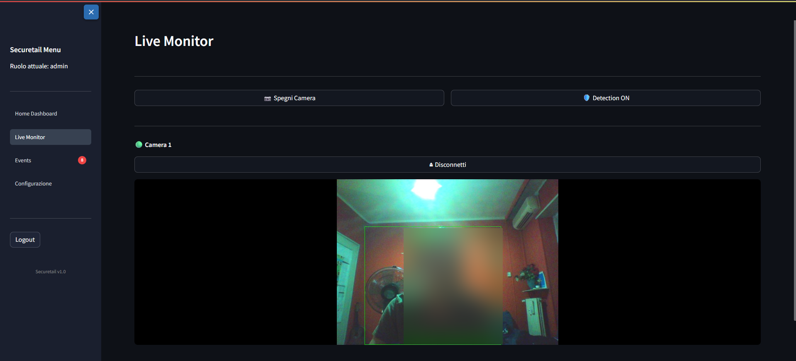
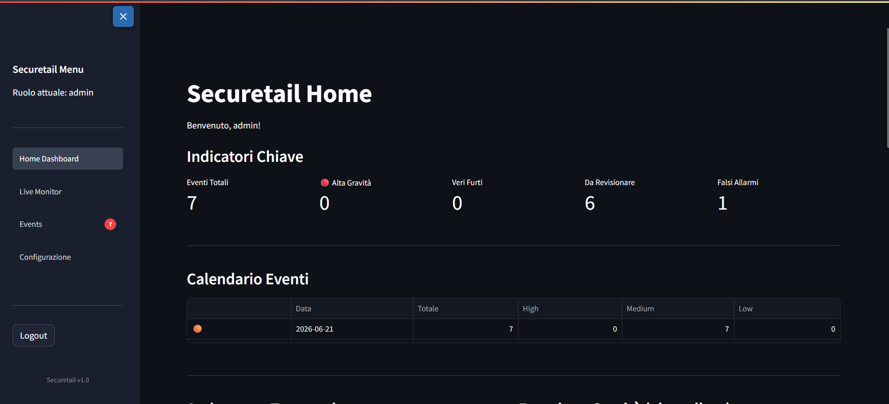
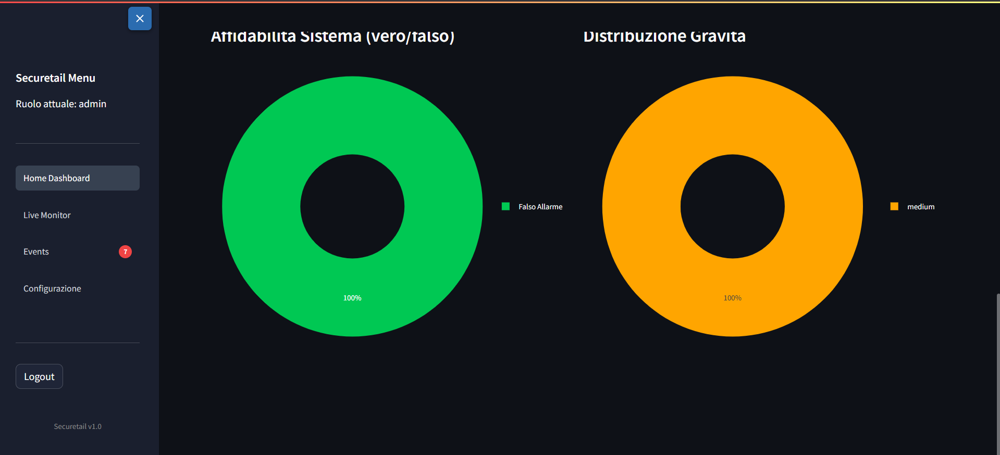
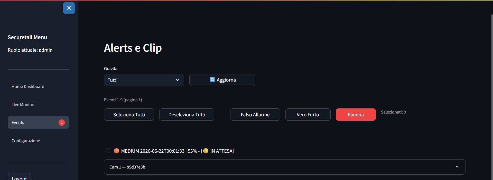

Securetail è un sistema di videosorveglianza anti-taccheggio che monitora in tempo reale le zone sensibili di un negozio. L'allarme scatta solo quando una persona entra davvero vicino allo scaffale sorvegliato — non a ogni ombra, cambio di luce o passante casuale.

Altre schermate prese direttamente dall'ambiente di sviluppo durante un test live.



Il sistema è pensato per un caso reale: la webcam è collegata a un normale PC nel negozio, mentre il cervello del sistema gira su un server in cloud. La dashboard si apre da qualsiasi browser, da qualsiasi dispositivo.
Un piccolo programma gira sul PC dove è collegata la webcam, la riconosce in automatico e trasmette il video via internet al server. Funziona su Windows, macOS e Linux senza configurazioni particolari.
Riceve il video in diretta, lo analizza con l'intelligenza artificiale, decide se qualcosa è sospetto e salva tutto in un database. È il componente più complesso: gestisce eventi, video, utenti e la logica di detection.
Una pagina web accessibile da qualsiasi browser: si vedono le camere in diretta, si rivedono i video degli eventi registrati, si disegnano le zone da sorvegliare e si gestiscono gli utenti.
Il sistema usa un approccio a due filtri che permette di analizzare 30 immagini al secondo su un normale PC, senza schede grafiche costose. La chiave è non sprecare risorse quando non serve.
Un algoritmo leggero confronta ogni immagine con la scena "ferma" memorizzata in precedenza. Se non c'è nessun movimento — scaffale immobile, negozio vuoto — il sistema non fa nient'altro e non consuma risorse.
Solo quando c'è del movimento, si attiva una rete neurale (YOLO11s-pose) che verifica se il movimento è causato da una persona reale, dove si trova rispetto allo scaffale sorvegliato, e come è posizionato il suo corpo.
Il sistema non giudica un singolo momento isolato: tiene traccia di quello che fa ogni persona nel tempo, e distingue chi prende un prodotto e lo rimette a posto da chi lo nasconde e se ne va.
L'errore più comune nei sistemi di videosorveglianza è giudicare ogni momento come se fosse isolato. Securetail invece segue cosa fa ogni persona nel corso del tempo: un'azione sospetta deve costruirsi in una sequenza logica prima che scatti l'allarme.
L'oggetto era visibile sullo scaffale e ora non si vede più dopo che la persona ha allungato la mano
La mano si sposta verso il corpo mentre l'oggetto scompare dalla scena — gesto tipico di chi nasconde qualcosa
La persona si allontana dallo scaffale portando con sé l'oggetto che aveva preso
Movimento rapido verso la tasca o il petto, con scomparsa simultanea dell'oggetto
Sequenza di movimenti coerenti con il nascondere qualcosa sotto la maglia o la giacca
Quando ci sono molte persone vicine o sovrapposte, il sistema riduce automaticamente la sensibilità per evitare errori
Non basta che un sistema "funzioni in teoria". Questi sono i risultati misurati durante i test, inclusi scenari volutamente difficili come luci che sfarfallano o persone che si muovono velocemente.
Securetail è funzionante e usabile per dimostrazioni e test, ma è ancora un prototipo sperimentale — non un prodotto finito. Dichiarare esplicitamente i limiti è parte integrante di un lavoro serio.
Un manichino, un riflesso su una vetrina, o un cliente che passa per un motivo legittimo possono ancora far scattare un allarme. Eliminarlo del tutto richiederebbe addestrare l'AI su video reali di furti, con una fase di calibrazione per ogni negozio.
Tutti i test sono stati fatti con una sola webcam USB. Aggiungere una seconda o terza camera richiederebbe hardware più potente o una scheda grafica dedicata. La gestione multi-camera è prevista nel codice, ma non è mai stata testata nella pratica.
Il sistema funziona bene entro 2-3 metri dalla camera. Oltre i 4-5 metri, oggetti piccoli occupano troppo pochi pixel per essere riconosciuti in modo affidabile.
In un caso isolato, dopo diverse ore di funzionamento continuato il server ha avuto un rallentamento importante. Non si è ripetuto, ma suggerisce che un utilizzo 24/7 richiederebbe ulteriori ottimizzazioni prima di andare in produzione.
I sistemi di videosorveglianza enterprise costano decine o centinaia di migliaia di euro e richiedono hardware dedicato. Securetail nasce per chi non può o non vuole spendere così tanto.
I permessi non sono solo un blocco nell'interfaccia grafica: anche il server rifiuta le operazioni non autorizzate, quindi non si può aggirare il sistema aprendo il codice o le API direttamente.
Un progetto funzionante non è solo codice che gira: è anche la capacità di diagnosticare e risolvere i problemi che si presentano fuori dal caso ideale.